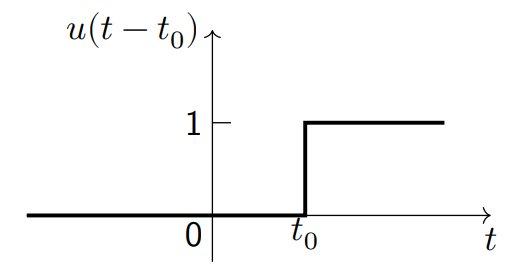
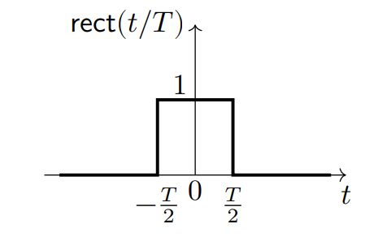

특이 함수 (Singularity Function)
이번 포스트에서는 신호 및 시스템에 자주 등장하는 특이 함수의 개념에 대해 설명할 것이다.
unit step function (단위 계단 함수)
\[ u(t-t_0) = \begin{cases} 1,\;\; t > t_0\\ 0,\;\; t < t_0\\ \end{cases} \]

단위 계단 함수는 \(t_0\) 이전에는 값이 없고 이후에만 1이라는 값을 갖는다.
\(t_0\)의 값은 정의되지 않는데 이것이 큰 문제를 갖지는 않음
단위 계단 함수를 아래와 같이 사용(switching)할 수 있음 \[cos(\omega t) u(t) = \begin{cases} cos(\omega t),\;\; t > 0\\ 0, \;\quad t < 0\\ \end{cases}\]
unit rectangle function (단위 사각 함수)
\[ rect(t/T) = \begin{cases} 1,\;\; -T/2< t < T/2\\ 0,\;\; otherwise\\ \end{cases} \]

위와 같은 단위 사각 함수는 단위 계단 함수로도 표현할 수 있다.
\[rect(t/T) = u(t+T/2) - u(t-T/2)\]
단위 사각 함수는 신호의 일부분을 추출(extracting)할 때 유용하다.
\[x(t) = cost \cdot rect[(t - \pi)/2\pi]\]
\(cost\) 신호를 0부터 \(2\pi\)구간까지 추출
\(\because rect[(t - \pi)/2\pi]\)는 \(rect(t/2\pi)\)를 \(\pi\)만큼 time-shifted한 것
unit impulse function (단위 임펄스 함수)
디렉 델타 함수로 불리기도 함
연속 시간 일때의 임펄스 함수는 아래와 같이 정의할 수 있다.
\[\delta (t) = \begin{cases} \infty,\;\; t = 0\\ 0,\;\;\;\; otherwise\\ \end{cases} \]
\[\int_{-\infty}^{\infty}\delta(t)dt = 1\]
위와 같은 단위 임펄스 함수는 단위 계단 함수를 미분하여 얻을 수 있다.
\[\frac{d}{dt}u(t-t_0) = \delta(t-t_0)\]
properties of unit impulse function
Sifting property \[\int_{-\infty}^{\infty}f(t)\delta(t-t_0)dt = f(t_0)\]
\[f(t)\delta(t-t_0) = f(t_0)\delta(t-t_0)\]
sift는 채로 거른다는 의미를 갖고 있음other property
\[\delta(t-t_0) = \frac{d}{dt}u(t-t_0)\]
\[ u(t-t_0) = \int_{-\infty}^{t}\delta(t-t_0)d\tau = \begin{cases} 1, t> t_0\\ 0, t<t_0\\ \end{cases} \]
\[\int_{-\infty}^{\infty}\delta(at-t_0)dt = \frac{1}{|a|}\int_{-\infty}^{\infty}\delta(t-t_0/a)dt\]
\[\delta(t) = \delta(-t)\]